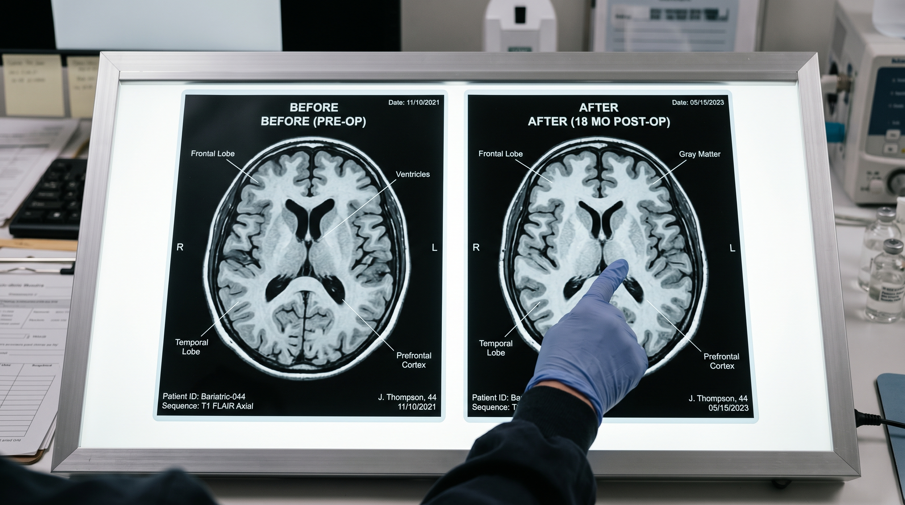
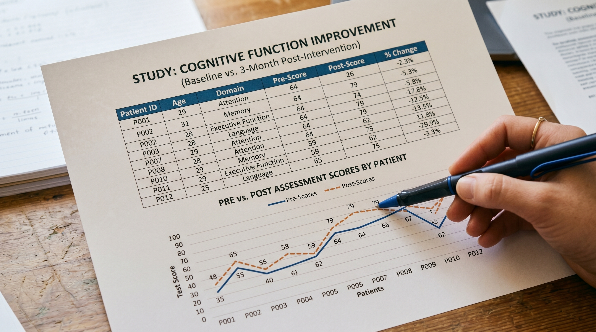
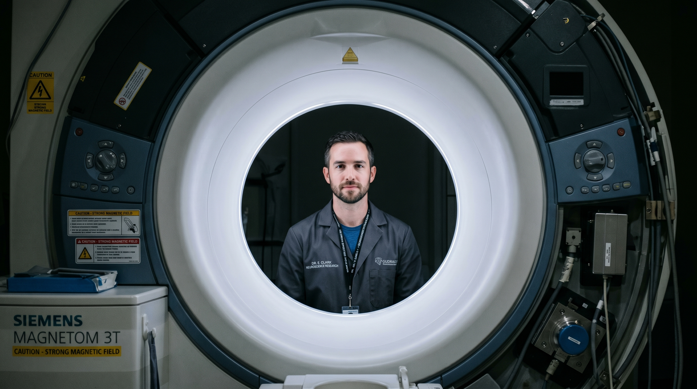
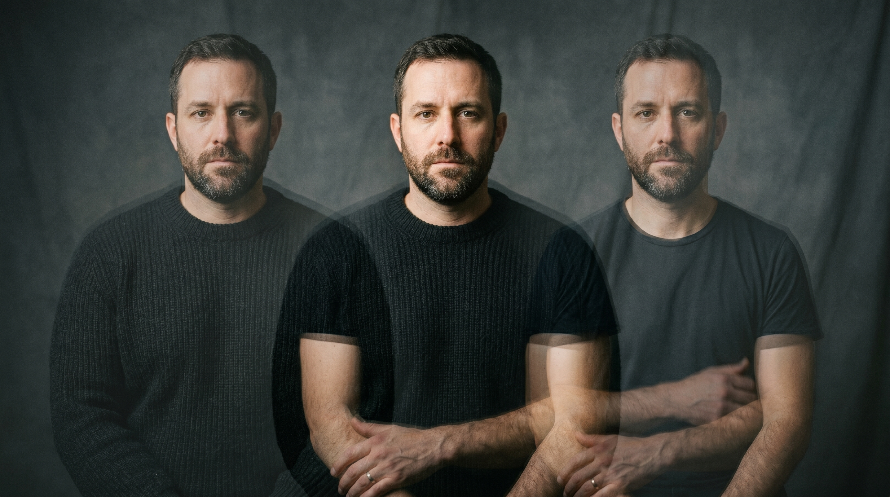

Project Context
§ 01The Challenge / Hypothesis
Obesity is understood primarily as a metabolic disease — a story about the body. But Gunstad's research revealed something more troubling: obesity ages the brain by approximately 10 years. Memory, attention, executive function — the cognitive profile of a person with severe obesity resembles someone a decade older. The brain is not a bystander to what happens in the body.
The Solution / Innovation
Gunstad's lab tracked patients before and after bariatric (weight loss) surgery and found something remarkable: within 12 weeks of the procedure, the cognitive damage began reversing. The brain — more plastic than anyone had assumed — starts recovering. This is a story about what we are willing to do to get our minds back, and what it says about the relationship between body, brain, and identity.
Scientific Workflow
§ 02Baseline Cognitive Assessment
Patients complete a battery of cognitive tests before surgery — memory, attention, processing speed, executive function. This establishes the benchmark.
Neuroimaging (MRI)
Brain scans conducted pre- and post-surgery to document structural and functional changes. The imaging data makes the invisible visible.
Post-Surgical Follow-Up
The same cognitive battery administered at 6 weeks, 12 weeks, and beyond. The data shows recovery in real time. [Photographable: follow-up assessment, data entry, researcher with patient if IRB-approved — otherwise simulated]
Data Analysis
The pattern across patients: cognitive improvement correlated with weight loss and time post-surgery. The finding that changes the story.
---
Shot Concepts
§ 03Gunstad reviewing brain scan data on a monitor — his face lit partly by the screen showing before/after MRI images side by side. The scans are the evidence of his discovery: a brain before, a brain after, and the difference between them.
- Position the monitor so scan imagery is clearly visible in the frame
- Request a before/after comparative layout on screen if possible
- Key light from camera-left supplements the screen; keep screen influence visible
- 3/4 or slight profile — show both face and monitor in the same frame
- The "before" scan should read as subtly different from "after" — confirm with Gunstad which orientation tells the story correctly
Technical Notes
Setup Diagram

AI Visualization Prompt
Two brain scan images printed and laid side by side on a neutral surface — or displayed on a monitor in a clean framing. The same patient's brain, months apart. The visual proof of the reversal. This is the image that communicates the finding without a word of explanation.
- Can be prints on a light table or a clean monitor display
- Ensure the two scans are from the same patient and oriented identically
- Label which is "before" and "after" visually if prints are used
- Gloved hands or a researcher's hand in frame for scale and humanity
- Confirm IRB permissions for any patient data displayed, even anonymized scans
Technical Notes
Setup Diagram

AI Visualization Prompt
Clean editorial portrait. Gunstad in his office or lab, direct eye contact, relaxed authority. Books, brain models, or data printouts filling the background environment. The psychology of a scientist who has spent a career measuring invisible things.
- Warm key light — this is a human story with emotional stakes
- Office or lab environment depending on his preference
- If a physical brain model is available, it can be a subtle prop
- Horizontal for web; vertical for print profile
Technical Notes
Setup Diagram
AI Visualization Prompt
A close-up of cognitive test data — a spreadsheet, a data printout, or a visualization on a monitor showing the before/after cognitive scores across a patient cohort. The numbers are the quiet proof. The image that says: this is what reversal looks like in data.
- Print a data visualization or use a monitor display
- The numbers don't need to be reader-legible — the visual impression of data is sufficient
- A hand or pen in frame anchors it as active science
- Warm directional light over the data surface
Technical Notes
Setup Diagram

AI Visualization Prompt
The conceptual problem with the original prompts: Brain scans on a monitor is the most predictable possible image for a neuroscience story. The research is about reversal — damage that undoes itself. The images should carry that sense of change, recovery, before/after.
The idea: Gunstad photographed through the circular bore of an MRI scanner — his face framed by the tunnel, lit only by the machine's soft interior ambient light. The circular frame reads as a porthole, a microscope lens, an eye. He has spent his career sending people into this machine to find out what's changing inside their heads. This is him inside the thing that makes the invisible visible. No screens. No data. Just a face in a hole.
Technical Notes
Setup Diagram

AI Visualization Prompt
The idea: A deliberate in-camera double exposure. The same subject photographed twice from an identical position — once at a heavier weight (padding, costume suggested, or different subject) and once lighter. The two exposures overlap at 50% opacity, creating a ghost of one body inside another. The image is about the self that persists through physical transformation — the brain that recovers, the identity that stays while the body changes. This is a technically demanding in-camera image, but the AI prompt can visualize it.
Technical Notes
Setup Diagram
